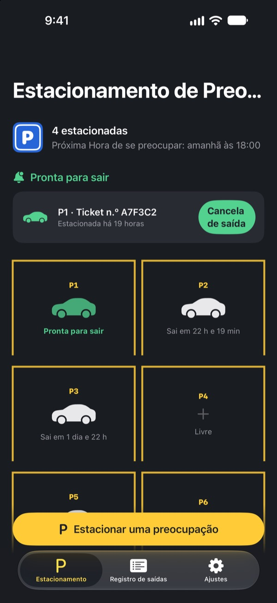
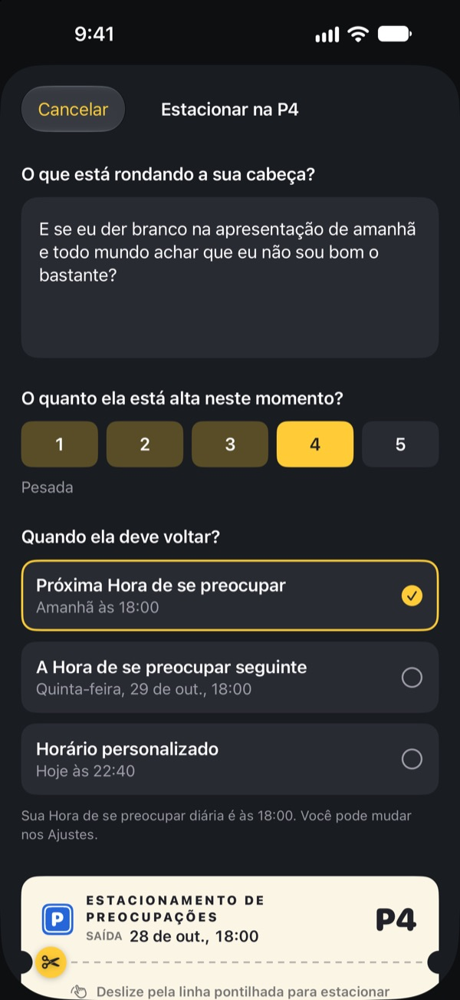
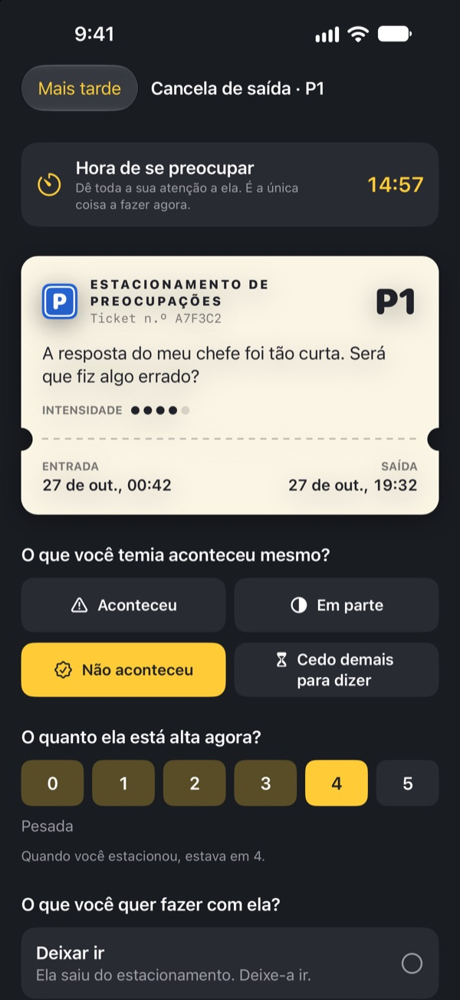
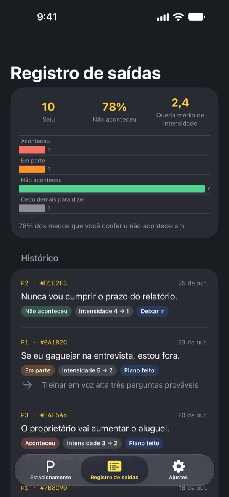

Estacione a preocupação.
Pegue depois.
Escreva o que fica rodando na sua cabeça na hora de dormir e deixe num tíquete de estacionamento. A gente devolve na sua Hora de se preocupar. Até lá, você não precisa carregar isso.
Todos os recursos são grátis. Sem anúncios, sem conta.

Estacione uma preocupação
Deixe o exemplo ou escreva o que está na sua cabeça agora. Estacionada, ela fica embaçada, e você tira de novo na Hora de se preocupar.
Apagou a luz, a cabeça acendeu?
É só deitar que começa: uma frase que você disse hoje, a reunião de amanhã, a mensagem que ainda não foi respondida. Quanto mais você tenta não pensar, mais alto fica. O Estacionamento de Preocupações não pede que você empurre a preocupação para longe. Você escreve, dá uma vaga a ela e separa um horário para cuidar disso.
Escreveu, saiu da cabeça
Escreva do jeito que ela soa na sua cabeça e marque o quanto ela pesa agora, de 1 a 5. Destaque o tíquete e a preocupação fica no estacionamento, embaçada.
Se ela voltar a rondar, diga: você já tem vaga. A sua hora vai chegar, mas não agora.

15 minutos na Hora de se preocupar
Todo dia, na sua Hora de se preocupar, chega um lembrete. Na cancela de saída você lê a preocupação de novo, confere se ela aconteceu mesmo e o quanto ela pesa agora.
Depois deixa ir, transforma num pequeno próximo passo ou estaciona de novo até a próxima Hora de se preocupar.

Veja quantas preocupações se confirmaram
Conforme as preocupações saem, o registro de saídas mostra quantas aconteceram de verdade e quanto a intensidade caiu.
A preocupação costuma prever um futuro pior do que ele é. Quanto mais você registra, menos acredita na próxima.

Comece em três passos
- 1
Escolha sua Hora de se preocupar
Na primeira vez que abrir, escolha quando vai cuidar das preocupações todo dia. Dá para mudar depois em Ajustes.
- 2
Estacione uma preocupação de verdade
Estacione logo algo que está na sua cabeça e perceba como a intensidade muda antes e depois.
- 3
Permita os lembretes de saída
Na Hora de se preocupar chega um lembrete só com o número da vaga.
Por que funciona
- Se preocupar num horário fixo
- Quem levou as preocupações para um momento curto do dia passou menos tempo preocupado e relatou menos ansiedade e problemas de sono. (Borkovec et al., 1983; McGowan e Behar, 2013)
- Escrever para soltar
- Fazer um plano concreto impediu que tarefas pendentes invadissem os pensamentos, e escrever cinco minutos antes de dormir ajudou a pegar no sono mais rápido. (Masicampo e Baumeister, 2011; Scullin et al., 2018)
- Conferir o que aconteceu de fato
- Quando pessoas com preocupação crônica registraram suas preocupações, 91% delas não se concretizaram. (LaFreniere e Newman, 2020)
O Estacionamento de Preocupações se baseia no adiamento da preocupação, uma técnica da terapia cognitivo-comportamental (TCC) estudada há décadas.
Tudo é grátis
Grátis
- Vagas ilimitadas
- Lembretes diários na Hora de se preocupar e horário de saída à sua escolha
- Cancela de saída e registro de saídas
- Insights de saídas: quantas aconteceram e quanto a intensidade caiu
Gorjeta, se quiser
- Se o app ajudou, você pode deixar uma pequena gorjeta para o desenvolvedor
- Pequena, média ou grande, como preferir
A gorjeta não libera nada. Sem ela, tudo funciona igual.
Sem anúncios, sem conta, sem servidores e sem ferramentas de análise. Tudo o que você escreve fica no seu iPhone.
Perguntas frequentes
Como mudo minha Hora de se preocupar?
Na aba Ajustes, em Hora de se preocupar. O novo horário vale para o que você estacionar a partir daí. As preocupações já estacionadas mantêm o horário de saída original.
Não recebo os lembretes de saída.
Confira Notificações na aba Ajustes. Se aparecer que estão desativadas, toque em Abrir os Ajustes do iOS e ative. Com um modo de Foco ou Não Perturbe ligado, os lembretes podem chegar em silêncio. Mesmo sem lembrete, as preocupações no horário aparecem prontas para sair no estacionamento.
Minha preocupação aparece na notificação?
Não. As notificações mostram só o número da vaga, como “P3 está pronta para sair”. A preocupação só aparece quando você abre o app e entra na cancela de saída.
Posso ver antes da Hora de se preocupar?
Toque no carro dela no estacionamento e escolha Enviar agora para a cancela de saída. Mas adiar funciona melhor quando você espera. A maioria das preocupações parece menor na Hora de se preocupar.
Consigo passar meus registros para um iPhone novo?
Tudo fica só no seu iPhone, sem conta e sem sincronização. Se você restaurar o iPhone novo a partir de um backup do iCloud ou do computador, ou usar o Início Rápido, os dados vão junto com os dos outros apps.
Como apago meus registros?
Na aba Registro de saídas, deslize um item para a esquerda para apagar. Se apagar o app, tudo é apagado junto.
Isso é um tratamento?
O Estacionamento de Preocupações é uma ferramenta de autocuidado baseada no adiamento da preocupação da TCC. Não é um dispositivo médico e não substitui diagnóstico ou tratamento profissional.
E se eu estiver muito mal?
Se a preocupação está tomando conta dos seus dias ou você pensa em se machucar, não carregue isso sozinho. No Brasil, ligue para o 188 (CVV, gratuito, 24 horas) ou para o 192 (SAMU) em caso de emergência.
Dúvidas ou sugestões? Escreva para leeo@kakao.com.